방송통신기사 (2015-10-04 기출문제)
1과목: 디지털 전자회로
1. 다음 정전압 회로에서 전압 안정도를 0.⑤로 하기위해서 RS의 값은? (단, rd=10[Ω])
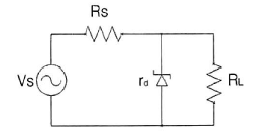
- 190[Ω]
- 260[Ω]
- 290[Ω]
- 330[Ω]
(정답률: 52%)
2. 다음 중 정류회로에서 다이오드를 병렬로 여러 개 접속시킬 경우에 나타나는 특성으로 옳은 것은?
- 과전압으로부터 보호할 수 있다.
- 정류회로의 전류용량이 커진다.
- 정류기의 역방향 전류가 감소한다.
- 부하출력에서 맥동률을 감소시킬 수 있다.
(정답률: 44%)

3. 다음 증폭기 회로의 특성에 대한 설명으로 틀린 것은? (문제 오류로 실제 시험에서는 2, 3번이 정답처리 되었습니다. 여기서는 2번을 누르면 정답 처리 됩니다.)
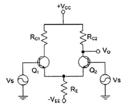
- 동상신호 제거비(CMRR)를 높게 하기 위해 hfe가 높은 트랜지스터를 사용한다.
- 동상신호 제거비(CMRR)를 높게 하기 위해 RE값을 감소시킨다.
- 동상이득을 높게 하기 위해 RC1과 RC2 값을 감소시킨다.
- 차동이득을 높게 하기 위해 RE 값을 감소시킨다.
(정답률: 62%)
4. 다음 증폭기 회로에서 βDC=75인 경우 컬렉터 전압 VC는 약 얼마인가? (단, VBE=0.7[V]이다.)
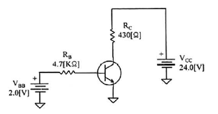
- 15.1[V]
- 17.1[V]
- 18.1[V]
- 20.1[V]
(정답률: 45%)
5. 전류 궤환 증폭기의 출력 임피던스는 궤환이 없을 경우에 비해 어떻게 변화하는가?
- 변화가 없다.
- 0이 된다.
- 감소한다.
- 증가한다.
(정답률: 59%)
6. 입력신호의 전주기에 대하여 선형영역에서 동작하는 증폭기는?
- A급 증폭기
- B급 증폭기
- C급 증폭기
- D급 증폭기
(정답률: 70%)
7. 발진회로에서 발진을 지속하기 위해 필요한 과정은?
- 출력신호의 일부분을 부궤환시킨다.
- 출력신호의 일부분을 정궤환시킨다.
- 외부로부터 지속적으로 입력신호를 제공한다.
- L과 C성분을 제거한다.
(정답률: 61%)
8. 그림과 같은 발진회로에서 높은 주파수의 동작에 적절한 발진회로 구현을 위한 리액턴스 조건은 ?
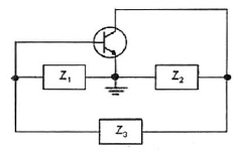
- Z1= 용량성, Z2= 용량성, Z3 = 용량성
- Z1= 유도성, Z2= 유도성, Z3 = 유도성
- Z1= 유도성, Z2= 용량성, Z3 = 용량성
- Z1= 용량성, Z2= 용량성, Z3 = 유도성
(정답률: 73%)
9. 변조도가 ‘1’이라는 의미는 무엇인가?
- 1[%] 변조
- 무변조
- 과변조
- 100[%] 변조
(정답률: 67%)
10. 디지털 신호의 정보 내용에 따라 반송파의 위상을 변화시키는 변조 방식으로 2원 디지털 신호를 2개씩 묶어 전송하는 QPSK 변조방식의 반송파 위상차는?
- 45[°]
- 90[°]
- 180[°]
- 270[°]
(정답률: 66%)
11. 다음 그림과 같은 회로에서 콘덴서 양단의 스텝 응답에 대한 상승 시간(Rise Time)은 약 얼마인가? (단, RC 시정수는 2[μs])
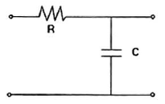
- 2[μs]
- 2.2[μs]
- 4[μs]
- 4.4[μs]
(정답률: 37%)
12. 병렬 클리핑 회로에서 클리핑 특성을 좋게 하기 위하여 사용되는 저항 R의 조건으로 옳은 것은? (단, Rd는 다이오드의 순방향 저항이다.)
- R=Rd
- R=1/Rd
- R
- R>Rd
(정답률: 60%)
13. BCD 코드 1001에 대한 해밍 코드를 구하면?
- 0011001
- 1000011
- 0100101
- 0110010
(정답률: 47%)
14. 다음 중 2-out of-5 code에 해당하지 않는 것은?
- 10010
- 11000
- 10001
- 11001
(정답률: 63%)
15. 다음 중 Master-Slave 플립플롭은 어떠한 현상을 해결하기 위한 플립플롭인가?
- 지연 현상
- Race 현상
- Set 현상
- Toggle 현상
(정답률: 63%)
16. 숫자 0에서 9까지를 나타내기 위해 BCD 코드는 몇 비트가 필요한가?
- 4
- 3
- 2
- 1
(정답률: 63%)
17. 다음 중 디코더(Decoder)에 대한 설명으로 틀린 것은?
- 출력보다 많은 입력을 갖고 있다.
- 한번에 하나의 출력만을 동작한다.
- N 비트의 2진 코드 입력에 의해 최대 2N개의 출력이 나온다.
- 인코더(Encoder)의 역기능을 수행한다.
(정답률: 57%)
18. 다음 그림과 같은 회로의 명칭은?
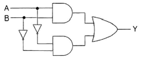
- 일치 회로
- 시프트 회로
- 카운터 회로
- 다수결 회로
(정답률: 62%)
19. 다음 중 특정 비트의 값을 무조건 0으로 바꾸는 연산은?
- XOR 연산
- 선택적-세트(Selective-Set) 연산
- 선택적-보수(Selective-Complement) 연산
- 마스크(Mask) 연산
(정답률: 66%)
20. 반가산기에서 입력이 A, B일 경우, 반가산기의 합(S)에 대한 출력 논리식으로 옳은 것은?
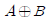
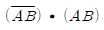
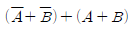
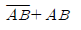
(정답률: 65%)
2과목: 방송통신 기기
21. 우리나라 위성방송에서 사용하고 있는 송신전파의 편파는?
- 수직직선편파
- 수평직선편파
- 우선타원편파
- 좌선타원편파
(정답률: 70%)
22. 텔레비전 방송 제작 중 연주소에서 하는 역할로 틀린 것은?
- 프로그램 제작
- 제작된 프로그램을 송신소로 송출
- 제작된 프로그램을 방송위성국으로 송출
- 제작된 프로그램을 일반 수신자에게 송출
(정답률: 68%)
23. 다음 중 방송영상에서 색의 3요소가 아닌 것은?
- 휘도
- 혼합도
- 명도
- 포화도
(정답률: 78%)
24. 다음 중 각종 영상신호의 소스와 모니터에 사용하여 “On Air” 중임을 알려주는 것은?
- 탈리 시스템(Tally system)
- Border line generator
- 문자슈퍼장치
- 셀프 키
(정답률: 88%)
25. 여러 개의 입력 마이크나 녹음기, 턴테이블, 라인입력, 음악효과 등을 혼합 처리해서 VTR 또는 Tape recorder에 녹음하거나 앰프를 통해 스피커로 보내는 것은?
- 콘솔(음향혼합)
- 녹화기
- 오디오 인코더
- 프리앰프
(정답률: 88%)
26. 라디오 송신 안테나의 근처에는 강한 전파로 인하여 다른 방송의 수신이 방해를 받게 되는 지역을 무엇이라고 하는가?
- 페이딩(Pading) 지역
- 블랭킷(Blanket) 지역
- 리전(Region) 지역
- 오버랩(Overlap) 지역
(정답률: 87%)
27. 다음 중에서 라디오 방송 설비가 아닌 것은?
- 부조정실
- 비디오편집실
- 송신소
- 주조정실
(정답률: 87%)
28. 다음 중 TV화면의 픽셀(Pixel)과 관련된 파라미터(Parameter)는?
- 변조도
- 증폭도
- 해상도
- 분포도
(정답률: 87%)
29. 다음 중 디지털 TV 방송기술의 일반적인 특성이 아닌 것은?
- 아날로그 신호에 비해 잡음에 강하고 송신전력이 낮다.
- 영상 및 음향신호의 압축이 가능하다.
- 정보의 검색, 가공 및 편집이 용이하다.
- 에러(Error) 정정 기술을 사용할 수 없으며 전송, 복제, 축적에 따른 열화가 크다.
(정답률: 80%)
30. 전송신호가 111111111일 때 여기에 PN(Pseudo Noise) 신호 100101010을 가하면 출력 신호 값은?
- 11111111
- 100101010
- 011010101
- 100101011
(정답률: 83%)
31. 다음 중 디지털 위성 방송이 디지털 기술의 발전에 따라 갖게 되는 특성과 거리가 먼 것은?
- 다채널화
- 고기능화
- 양방향화
- 양자화
(정답률: 85%)
32. 다음 중 위성 안테나의 종류에 속하지 않는 것은?
- 파라볼라 안테나
- 카세그레인 안테나
- 그레고리 안테나
- 야기 안테나
(정답률: 73%)
33. 다음 중 CATV 시스템에서 신호를 보내기 위한 전송계에 속하지 않는 것은?
- 광 송수신기
- U/V혼합기
- 연장증폭기
- 간선증폭기
(정답률: 77%)
34. CATV에서 입력신호 에너지를 간선에서 지선으로 불균등하게 분리시키는 장치는?
- 증폭기
- 분배기
- 분기기
- 보호기
(정답률: 89%)
35. CATV 전송로에 4분배기를 연결하였을 때, 입력에 비해 출력 손실값은 몇 [dB] 감소하는가? (단, 단자 손실값은 제외한다.)
- -3.02[dB]
- -4.02[dB]
- -5.02[dB]
- -6.02[dB]
(정답률: 77%)
36. 우리나라 지상파 DMB 전송방식을 설명한 것 중 옳은 것은?
- DQPSK변조, COFDM 멀티캐리어
- QAM변조, COFDM 멀티캐리어
- DQPSK변조, ATSC
- ASK변조, ISBD-TSB
(정답률: 81%)
37. 다음 중 ATSC방식의 DTV 송신기의 구성 요소가 아닌 것은?
- R/S Encoder
- CIN Diplexer
- Data Interleaver
- Trellis Encoder
(정답률: 74%)
38. 다음 중 NTSC용 웨이브폼 모니터에서 측정된 50[IRE]는 몇 [mV]인가?
- 357[mV]
- 350[mV]
- 346[mv]
- 334[mV]
(정답률: 76%)
39. 다음 중 아날로그 영상 신호의 측정 항목에 따른 증상으로 옳은 것은?
- C/N비가 낮으면 대각선의 띄가 나타난다.
- CSO는 물결치는 비스듬한 줄무늬 현상이 발생한다.
- CTB는 SNOW 현상이 발생한다.
- 교차변조는 2~3개의 줄무늬 현상이 발생한다.
(정답률: 68%)
40. 방송용 송신기에서 증폭기의 입력 전력이 3[mW], 출력 전력이 3[w]일 때 전력이득은?
- 60[dB]
- 40[dB]
- 30[dB]
- 10[dB]
(정답률: 71%)
3과목: 방송미디어 공학
41. 다음 중 디지털 방송 시스템의 특성이 아닌 것은?
- 네트워크 기반의 통합 제작 시스템
- 효율적 자료관리 시스템
- 방송자동화 시스템의 증가
- 선형 편집 시스템
(정답률: 86%)
42. FM 라디오방송의 파일럿(Pilot) 신호는 몇 [kHz]인가?
- 19[kHz]
- 20[kHz]
- 21[kHz]
- 22[kHz]
(정답률: 74%)
43. 다음 중 우리나라 지상파 디지털 TV 전송방식은?
- ATSC
- IBST
- DVB-T
- DVB-C
(정답률: 88%)
44. 음향신호에서 2[V]와 10[V]의 레벨[dB]차는 약 얼마인가?
- 8[dB]
- 14[dB]
- 18[dB]
- 22[dB]
(정답률: 76%)
45. 다음 중 앰프의 특성으로 옳지 않은 것은?
- 댐핑 팩터는 내부 저항이 작을수록 커진다.
- 앰프의 정격 출력은 사용 스피커의 허용 입력보다 작은 것이 안전하다.
- A급 앰프는 소비 전력이 가장 많다.
- 고조파 왜곡은 과대 입력 때문에 생긴다.
(정답률: 68%)
46. 다음 중 카메라 조리개의 기능이 아닌 것은?
- 렌즈를 통과하는 광량을 조절
- 피사체의 심도를 조절
- 구면 수차 조절
- 화상의 선명도
(정답률: 69%)
47. 카메라 렌즈의 구경이 3[cm], 초점거리가 4.2[cm]일 때 f-stop은 얼마인가?
- 1.3
- 1.4
- 1.5
- 1.6
(정답률: 79%)
48. 다음 중 방향 조절장치인 플래그(flag)에 대한 설명으로 틀린 것은?
- 불투명한 직사각형의 판으로 특정 부분에 빛이 비치는 것을 막는다.
- 반도어(Barn door)와 같은 기능을 하지만 조명기구에 직접 장착하지는 않는다.
- 카메라에 포착됨이 없이 빛을 차단하고자 하는 세트부분에 직접 설치한다.
- 전체적으로나 부분적으로 어떤 영역에 빛을 강조할 경우 효율적으로 사용된다.
(정답률: 52%)
49. 영상 처리 기법 중 출력 이미지의 각 픽셀값을 결정하는 데에는 오직 입력 이미지의 대응되는 픽셀값만 이용되는 처리방법을 무엇이라 하는가?
- 포인트 처리
- 영역 처리
- 기하학적 처리
- 프레임 처리
(정답률: 75%)
50. DMB에서 음영지역을 커버하기 위한 장비는 무엇인가?
- SFN
- CDM
- Gap Filler
- PAD
(정답률: 79%)
51. 다음 중 오디오 파일 포맷이 아닌 것은?
- ASF
- RA
- AIFF
- TIFF
(정답률: 81%)
52. 아날로그 오디오의 샘플링의 주파수를 44[kHz], 양자화 비트를 10비트로 할 경우, 30초간 샘플링했을 때 저장해야하는 오디오 데이터 용량은 얼마인가?
- 13,200,000[byte]
- 1,650,000[byte]
- 825,000[byte]
- 44,000[byte]
(정답률: 80%)
53. MP3 파일은 다음 중 어디에 해당되는 오디오 압축 기술인가?
- MPEG-1
- MPEG-2
- MPEG-4
- MPEG-7
(정답률: 56%)
54. 방송시청 중 다른 언어를 선택하여 자막으로 볼 수 있는 방송을 무엇이라고 하는가?
- 수화방송
- 음성다중방송
- 문자다중방송
- 문자송출방송
(정답률: 73%)
55. 지상파 디지털 텔레비전방송의 데이터방송에서 제공 가능한 서비스가 아닌 것은?
- 상시 양방향 서비스
- 뉴스, 기상정보 서비스
- 프로그램 연계 정보 서비스
- E-Commerce 서비스
(정답률: 53%)
56. 디지털TV, 입체TV 방송을 거쳐 미래에 서비스 될 차세대 방송으로 다차원 미디어를 이용하여 사용자에게 몰입감을 줄 수 있는 방송서비스는?
- 3D방송
- 실감방송
- 초선명방송
- 융합방송
(정답률: 71%)
57. 양자화기의 비트수(N)가 증가할 때마다 부호하에 따른 양자화 오차는 몇 [dB]씩 감소되는가?
- 2[dB]
- 3[dB]
- 4[dB]
- 6[dB]
(정답률: 71%)
58. 우리나라 지상파 디지털방송(DTV)에서 사용되는 음성 부호화의 표준은 무엇인가?
- MPEG-1
- ACC
- AC-3
- MPEG-4
(정답률: 86%)
59. 국내 디지털 지상파 텔레비전의 프로그램 채널당 영상 부호화 목표 비트율은 최대 얼마인가?
- 4[Mbps]
- 8[Mbps]
- 9.7[Mbps]
- 19.4[Mbps]
(정답률: 70%)
60. 디지털 신호 처리에서 원신호와 샘플링 주파수와의 관계로 가장 적절한 것은? (단, fs: 샘플링주파수, fmax: 원신호의 최대주파수)
- fs = fmax
- fs ≥ 2fmax
- fs < fmax
- fs = 3fmax
(정답률: 87%)
4과목: 방송통신 시스템
61. 다음과 같은 조건의 수신기 한계레벨은?
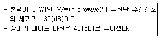
- -70[dBm]
- -47[dBm]
- -33[dBm]
- -27[dBm]
(정답률: 74%)
62. 어떤 신호가 0~25[kHz]로 주파수 대역이 제한되어 있을 때 나이퀴스트율을 만족하는 최소 표본화 주기는 얼마인가?
- 20[μs]
- 30[μs]
- 40[μs]
- 45[μs]
(정답률: 64%)
63. 다음 중 위상변조의 특징이 아닌 것은?
- 피변조파의 순시 위상이 메시지 산호에 비례한다.
- 순시주파수는 메시지 신호의 적분에 비례한다.
- 최대 주파수 편이는 메시지 신호의 진폭과 주파수에 비례한다.
- 주파수 변조에 비해 변조기 구조가 간단하고 성능도 안정적이다.
(정답률: 47%)
64. 다음 중 디지털라디오전송방식에 해당되지 않는 것은?
- EURECA-147
- ATSC
- ISDB-Tsb
- IBOC
(정답률: 63%)
65. 다음 중 AM 스테레오 방식의 기본원리가 아닌 것은?
- 직각변조방식(AM/FM)
- 진폭각도변조방식(AM/PM, AM/FM)
- 독립측파대방식(AM/PM)
- 강도변조방식(IM/PM)
(정답률: 64%)
66. 다음 중 FM 송신기 보조회로가 아닌 것은?
- 순시 주파수 편이회로
- 프리 엠퍼시스회로
- 자동 주파수 제어회로
- 스켈치 회로
(정답률: 59%)
67. 디지털 HDTV 방송시스템의 채널부호화 및 변조를 수행하는 것은?
- Source Coding
- Compression
- RF Transmission
- Demodulation
(정답률: 74%)
68. 다음 중 TV 송신시스템의 주요 구성요소가 아닌 것은?
- 급전계통
- 모니터시스템
- 송신장비
- 송신안테나 계통
(정답률: 80%)
69. 다음 중 TV 주조정실에서 사용되는 방송장비에 해당하는 것은?
- 다이플렉서
- Master Switch
- 영상,음성송신기
- 카메라
(정답률: 86%)
70. 통신위성주파수로서 INTELSAT에서 사용되는 주파수 대역이 아닌 것은?
- L-BAND
- C-BAND
- Ka-BAND
- Ku-BAND
(정답률: 65%)
71. 다음 보기에서 설명하고 있는 것으로 옳은 것은?
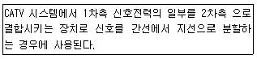
- 간선 증폭기
- 분배 증폭기
- 보안기
- 방향 결합기
(정답률: 53%)
72. CATV(SO) 방송시스템의 신호 흐름이 옳은 것은?
- 전송계 ⇒ 센터계 ⇒ 단말계
- 센터계 ⇒ 전송계 ⇒ 단말계
- 수신계 ⇒ 센터계 ⇒ 전송계
- 센터계 ⇒ 전송계 ⇒ 분배계
(정답률: 70%)
73. 다음 중 위성통신체의 서브 시스템별 구성부에 대한 주요기능이 틀린 것은?
- 안테나계 : 신호의 송수신
- 중계기계 : 신호를 수신한 후 주파수를 변화시켜 재송신
- 추진계 : 궤도위치 유지, 자세수정, 궤도 변경 및 초기궤도에서의 전계
- 구체계 : 위성의 궤도상 위치 및 자세제어
(정답률: 71%)
74. 다음 중 위성방송을 지상에서 수신시 단위 면적을 통과하는 전자파의 전력선 밀도 P는 약 얼마인가? (단, 전계세기 E는 197[V/m]이다.)
- 197[dBW/m2]
- 153[dBW/m2]
- 136[dBW/m2]
- 103[dBW/m2]
(정답률: 70%)
75. 지상파 DMB에서 사용하는 QPSK 변조방식은 하나의 부호에 몇 개의 비트를 적용하는가?
- 2
- 4
- 16
- 64
(정답률: 78%)
76. 다음 중 유럽의 지상파 디지털 TV 전송방식은?
- NTSC
- ATSC
- ISDB-T
- DVB-T
(정답률: 73%)
77. 다음 중 지상파 DMB에서 사용하는 멀티캐리어 OFDM 변조방식의 특성이 아닌 것은?
- 다중경로 페이딩에 강하다.
- 주파수 이용효율이 우수하다.
- 무선채널에서 고속전송이 가능하다.
- 유럽식 DVB-T 및 미국식 ATSC DTV에서 사용된다.
(정답률: 74%)
78. 다음 중 방송국 송신설비의 급전선으로서의 요건으로 해당되지 않는 것은?
- 손실이 될수록 적을 것
- 정비 점검이 용이할 것
- 급전선의 정수(定數)가 최대치로 변할 것
- 건설비 비용이 적을 것
(정답률: 79%)
79. 다음 중 송신소 시스템 설계시 고려해야 할 기본조건으로 거리가 먼 것은?
- 전파의 특성상 TV, FM, 중파방송의 설계조건은 동일하게 적용한다.
- 자연재해의 영향이 적은 곳에 설치한다.
- 운용요원의 통근 및 거주가 용이한 곳에 설치한다.
- 전원선의 인입과 기기의 반입이 용이한 장소에 설치한다.
(정답률: 83%)
80. 공동시청 안테나 시설의 신호처리기(증폭기) 중 광대역형 수신 증폭기의 특성이 아닌 것은?
- 수신 전대역을 증폭하는 것으로서 광대역 수신안테나 출력을 그대로 각각의 증폭기 입력에 가해 일괄 증폭하는 방식
- 입력을 채널별로 나누어 감쇠기로 레벨을 일정하게 한 후 혼합하여 일괄 증폭하는 방식
- 광대역형은 회로 구성상 채널간에 AGC 기능을 부가하여 사용하는 방식
- 입력전계가 안정한 소규모인 공시청이나 빌딩·집단주택 등의 공시청용에 적용
(정답률: 54%)
5과목: 전자계산기 일반 및 방송설비기준
81. 다음 중 후입선출(LIFO) 처리제어 방식은?
- 스택
- 선형 리스트
- 큐
- 원형 연결 리스트
(정답률: 69%)
82. 다음 중 운영체제의 프로세스 관리기능에 속하지 않는 것은?
- 사용자 및 시스템 프로세스의 생성과 제거
- 프로그램내 명령어 형식의 변경
- 프로세스 동기화를 위한 기법의 제공
- 교착상태 방지를 위한 기법 제공
(정답률: 62%)
83. 다음 중 다중프로그래밍(Multi-Programming)을 위하여 시스템이 갖추어야 할 것으로 관계가 가장 적은 것은?
- 인터럽트(Interrupt)
- 가상메모리(Virtual Memory)
- 시분할(Time Slicing)
- 스풀링(Spooling)
(정답률: 49%)
84. 객체지향 언어의 세 가지 언어적 주요 특징이 아닌 것은?
- 추상 데이터 타입
- 상속
- 동적 바인딩
- 로더(Loader)
(정답률: 70%)
85. CPU가 어떤 프로그램을 순차적으로 수행하는 도중에 외부로부터 인터럽트 요구가 들어오면, 원래의 프로그램을 중단하고, 인터럽트를 위한 프로그램을 먼저 수행하게 되는데 이와 같은 프로그램을 무엇이라 하는가?
- 명령 실행 사이클
- 인터럽트 서비스 루틴
- 인터럽트 사이클
- 인터럽트 플래그
(정답률: 70%)
86. 프로그램 구현시 목적파일(Object File)을 실행 파일(Execute File)로 변환해 주는 프로그램은?
- 링커(Linker)
- 프리프로세서(Preprocessor)
- 인터프리터(Interpreter)
- 컴파일러(Comipler)
(정답률: 58%)
87. 다음 중 ROM(Read-Only Memory)에 저장하기 가장 적합한 것은?
- 사용자 프로그램
- BIOS(Basic Input Output System)
- 인터럽트 벡터
- 사용자 데이터
(정답률: 75%)
88. 시프트 레지스터(Shift Register)의 내용을 오른쪽으로 2비트 이동시키면 원래 저장되었던 값은 어떻게 변화되는가?
- 원래 값의 2배
- 원래 값의 4배
- 원래 값의 1/2배
- 원래 값의 1/4배
(정답률: 48%)
89. 상대 주소지정(Relative Addressing)에서 사용하는 레지스터는 무엇인가? (문제 오류로 실제 시험에서는 모두 정답처리 되었습니다. 여기서는 1번을 누르면 정답 처리 됩니다.)
- 일반 레지스터(General Register)
- 색인 레지스터(Index Register)
- 시프트 레지스터(Shift Register)
- 메모리 주소 레지스터(Memory Address Register)
(정답률: 79%)
90. 다음 중 콘솔(Console)에 대한 설명으로 옳은 것은?
- 컴퓨터의 상태를 감시하고, 운용자의 필요에 의해서 동작에 개입할 수 있도록 설치된 단말기이다.
- 주기억 장치의 용량 부족을 보충하기 위해 외부에 부착하는 저장용 단말기이다.
- 타자기와 비슷한 형태의 입력 장치로서, 문자나 숫자의 키(Key)를 눌러서 컴퓨터에 입력시키는 단말기이다.
- 컴퓨터에서 처리된 결과를 인쇄하는 데 사용되는 단말기이다.
(정답률: 68%)
91. 다음 중 음악유선방송에서 전송선로시설(동축케이블사용시)의 질적 수준의 2015년 4회 방송통신 기사 측정 항목과 기준값에 대한 설명으로 틀린 것은?
- 신호레벨 : 50[dBμV] 이상
- 채널간 반송파의 레벨차 : 10[dB] 이내
- 반송파대 잡음비(C/N비) : 28[dB] 이하
- 전원험 변조도 : -50[dB] 이하
(정답률: 65%)
92. 초단파(FM) 방송용 무선설비의 최대 주파수편이는?
- ±50[kHz]
- ±65[kHz]
- ±70[kHz]
- ±75[kHz]
(정답률: 82%)
93. 정보통신공사업법에 의한 공사의 종류 중 통신설비공사가 아닌 것은?
- 전송설비공사
- 구내통신설비공사
- 위성통신설비공사
- 방송전송·선로설비공사
(정답률: 60%)
94. 데이터 전송 시 전압의 크기를 똑같이 하고, 위상을 45도, 135도, 225도, 315도의 4가지로 전송 하는 방식은?
- QAM
- QPSK
- MPEG
- ATM
(정답률: 72%)
95. 방송법에서 정의한 방송의 형태가 아닌 것은?
- 텔레비전방송
- 라디오방송
- 이동전화방송
- 데이터방송
(정답률: 75%)
96. 종합유선방송국의 진폭변조기의 출력 특성임피던스는 몇 [Ω]인가?
- 30[Ω]
- 50[Ω]
- 75[Ω]
- 600[Ω]
(정답률: 79%)
97. 종합유선방송 사업자별 시설 중 망사업자(NO) 시설이 아닌 것은?
- 광 송·수신기
- 분배센타 설비
- 주 전송설비(H/E)
- 망 감시시스템
(정답률: 77%)
98. 감리제외 대상인 정보통신공사의 범위에 해당되지 않는 것은?
- 안전, 재해예방 및 운용·관리를 위한 공사로서 총공사금액이 1억이상인 공사
- 전기통신사업법에 의한 전기통신사업자가 전기통신 역무를 제공하기 위한 공사로서 총공사금액이 1억원 미만인 경우
- 6층 미만이거나 연면적 5천제곱미터 미만인 건축물에 설치되는 정보통신설비의 설치공사
- 기타 공중의 통신에 영향을 미치지 아니하는 정보통신 설비의 설치공사로서 미래창조과학부장관이 정하여 고시하는 공사
(정답률: 76%)
99. 다음 중 주파수 분배에 있어서 미래창조과학부장관이 고려할 사항이 아닌 것은?
- 주파수의 이용현황 등 국내의 주파수 이용 여건
- 전파를 이용하는 서비스에 대한 수요
- 국방·치안 및 조난구조 등 국가안보·질서유지 또는 인명안전의 필요성
- 국내·외 주파수 이용확산에 대한 대책
(정답률: 75%)
100. 방송법에서 정의하는 “영상·비디오 등 영상물이 방송프로그램으로 제작되어 방송매체별로 다단계로 유통·활용 또는 수출될 수 있도록 지원할 수 있는 자”는 누구인가?
- 고용노동부장관
- 문화체육관광부장관
- 미래창조과학부장관
- 대통령
(정답률: 74%)
여러 개의 다이오드를 병렬로 연결하면 전류가 분산되어 각 다이오드가 전류를 나눠 받게 된다. 이로 인해 전류가 더 많이 흐를 수 있게 되어 정류회로의 전류용량이 커지게 된다.